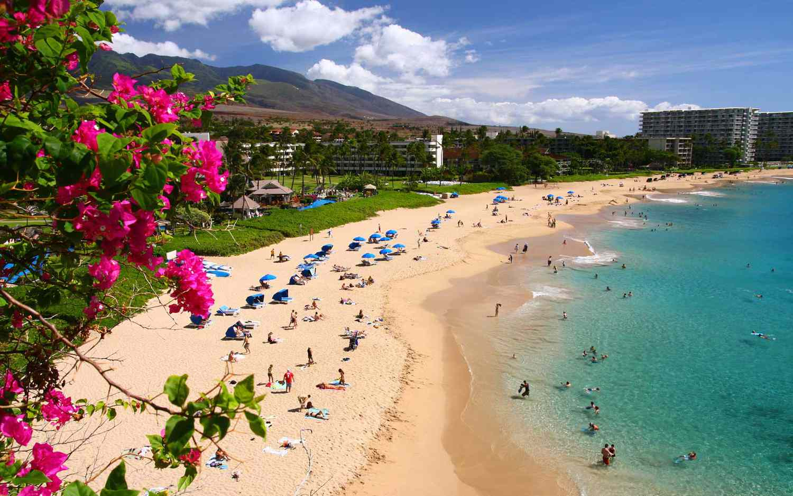
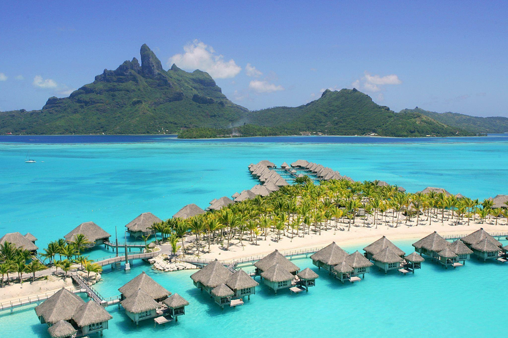
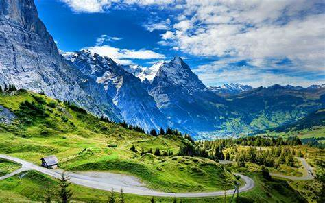
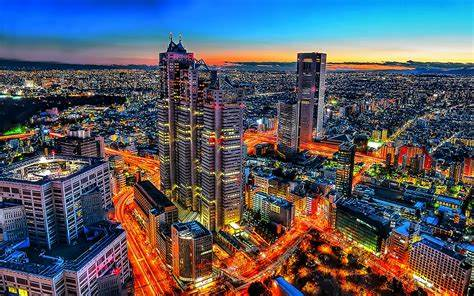
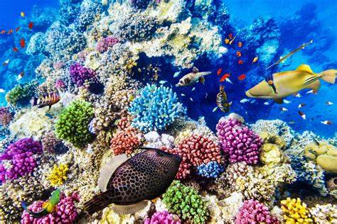
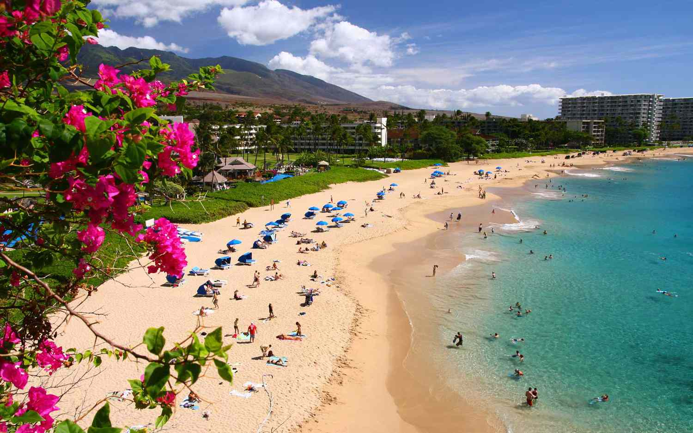
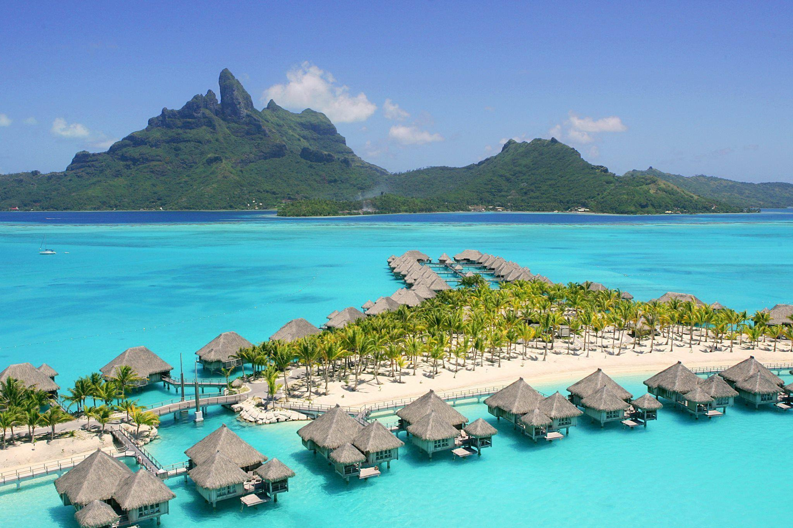
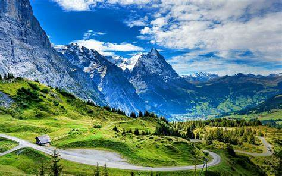
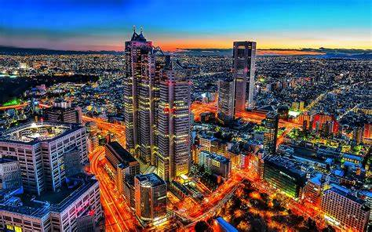
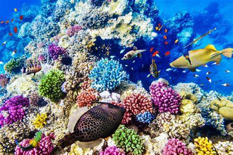

| Rank | Name | Country | Description | Activities | Famous Landmark |
|---|---|---|---|---|---|
| 1 | Rome |
Italy | Rome, the capital city of Italy, is a vibrant metropolis steeped in history and culture. | Sightseeing, Experiencing Culture | Colosseum |
| 2 | Maui  |
USA(Hawaii) | Second-largest island in Hawaii and a popular travel destination renowned for its stunning natural beauty and diverse landscapes. | Snorkeling, Hiking | Haleakala National Park |
| 3 | Bora Bora  |
French Polynesia | A small island in French Polynesia known for its stunning natural beauty and luxurious overwater bungalows. | Snorkeling, Beach Relaxation | Mount Otemanu |
| 4 | Swiss Alps  |
Switzerland | Breathtaking mountain ranges, offering a perfect blend of natural beauty, outdoor adventure, and charming alpine culture. | Skiing, Hiking | Matterhorn |
| 5 | Tokyo  |
Japan | A bustling metropolis that seamlessly blends traditional culture with cutting-edge modernity. | Temple Visits, Shopping | Tokyo Tower |
| 6 | Dubai |
United Arab Emirates | Known for its ultramodern architecture, luxury shopping, and vibrant nightlife. | Desert Safaris | Burj Khalifa |
| 7 | Great Barrier Reef  |
Ausralia | The world's largest coral reef system and one of the most remarkable natural wonders on the planet. | Diving, Snorkeling | Heart Reef |
| 8 | Bali |
Indonesia | A tropical paradise in Indonesia known for its stunning beaches, lush landscapes, and vibrant culture. | Surfing, Cultural Experiences | Uluwata Temple |